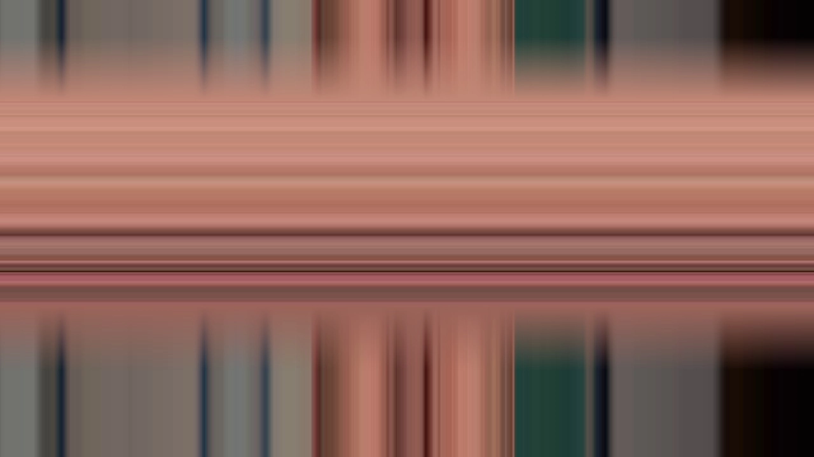
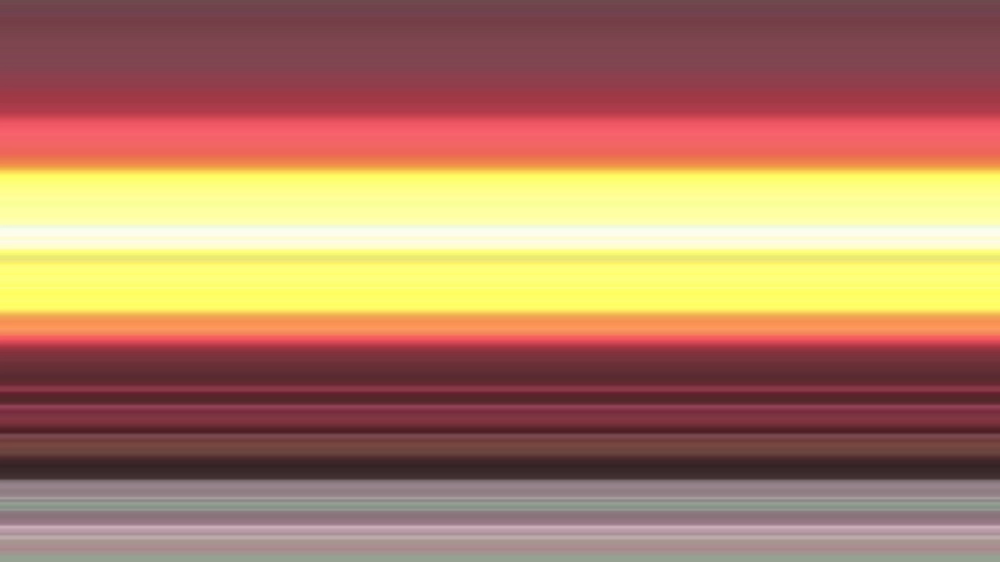
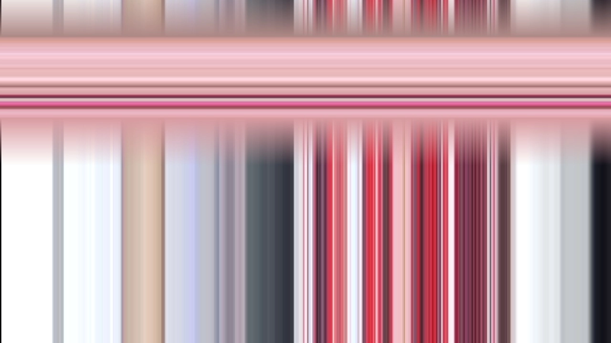
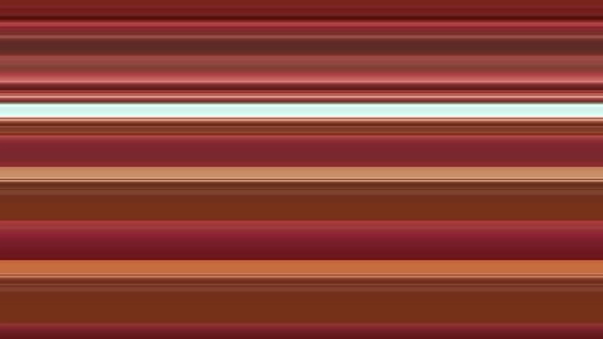

The Boxmaker
The Boxmaker is a machine in the cloud who's only purpose is creation for creation's sake. Using the output of post-industrial mass media as a medium, the machine produces these 'paintings' by-hand (in so much as a digital construct has hands).
I insert myself into the machine's work by making broad aesthetic choices and providing an execution environment, raising questions of authenticity and origin; Who is the artist? Is it me or the machine?
Select works from this project:
Full project archive


